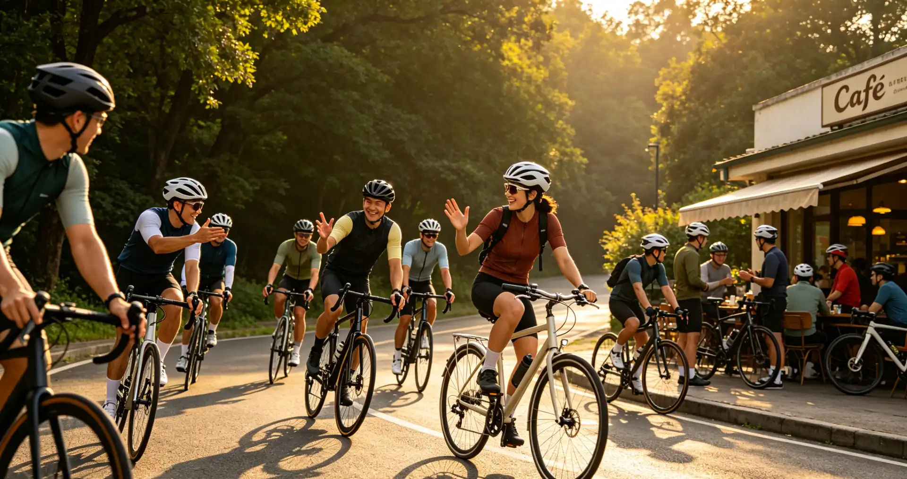

Few things in mountain biking are as intimidating as staring down a steep, rock-strewn chute with exposure on one side and nowhere to put a foot down. Your heart races, your hands grip the bars too tight, and your brain screams at you to grab the brakes. That instinct is exactly what causes most crashes on technical descents. This article teaches you the body positioning, brake control, and line-selection skills that transform rocky descents from terrifying to exhilarating—so you can ride features that currently make you dismount.
Body Positioning: The Foundation of Every Descent
The single most important skill for technical descents is correct body position. The "attack position" is the starting point: stand on the pedals with your pedals level (not one foot dropped), knees slightly bent, elbows out and bent, and your hips shifted back over the saddle—but not behind it. Your chin should be roughly over the stem, and your eyes should be looking 15–20 feet ahead, not at your front tire.
| Terrain Type | Body Position Adjustment | Common Mistake |
|---|---|---|
| Steep Rock Roll | Hips back, chest low, arms extended but not locked | Leaning too far back (unweights front wheel, loss of steering) |
| Loose Scree | Neutral centered position, light hands, heavy feet | Gripping bars too tight (bike deflects, rider goes over) |
| Rock Garden | Dynamic—shift weight fore/aft as needed, knees absorb impacts | Staying static (bike hangs up on rocks) |
| Off-Camber Rock | Weight on outside pedal, lean bike into slope, body upright | Leaning body with bike (tires slide out) |
| Drop to Flat | Weight back, arms extended, manual the front wheel off the lip | Pulling up on bars (causes nose-dive) |
A useful drill: find a moderate descent and practice riding it with your hands as light as possible on the grips—think "holding a baby bird." This forces you to stay balanced on your feet rather than supporting yourself through the handlebars. When you grip the bars too hard, every rock impact transfers directly to your upper body, causing arm pump and reducing your ability to steer precisely.
Brake Modulation: The Art of Controlled Speed
Most riders brake too much and at the wrong times on technical descents. The key principle is: brake before the obstacle, not on it. When you brake on a rock, your tires lose the ability to roll over it, and you are more likely to stall or slide. Brake in the smooth sections, then release as you enter the rough stuff.
Use one finger on each brake lever—this gives you maximum grip strength on the bars while maintaining full braking control. Modern four-piston brakes like the Shimano XT M8120 or SRAM Code RSC provide enough power that one finger is all you need. Your front brake provides roughly 70% of your stopping power on descents, so do not be afraid to use it. The rear brake is for speed modulation and steering control, not for panic stops.
Practice feathering: apply and release the brakes in short pulses rather than dragging them continuously. Continuous braking overheats the rotors and causes brake fade. On a long descent like the Whole Enchilada in Moab—which drops over 7,000 vertical feet over 26 miles—dragging your brakes will cook them before you are halfway down. Pulse braking keeps them cool and ensures consistent stopping power.
Line Selection: Reading the Trail Like a Pro
Walking a section before riding it is not a sign of weakness—it is a sign of intelligence. Professional enduro racers walk every stage before racing it. When you are walking, look for three things: the entry point, the exit point, and the "commit line" that connects them. The smoothest line is not always the fastest, but it is usually the safest.
On rocky terrain, look for the "V" between rocks where your tires can slot through. Avoid the "bowling ball" rocks—the round, loose ones that your front tire will push rather than roll over. When you cannot avoid a rock, hit it square rather than at an angle. A square hit allows both tires to roll over the obstacle, while an angled hit can deflect your front wheel and send you off-line.
Speed is your friend on rock gardens. Contrary to intuition, riding a rock garden at 8–20 mph is often safer than crawling through at 3–5 mph. At higher speed, your bike's suspension has time to react and absorb impacts, and your momentum carries you over obstacles that would stall you at low speed. The challenge is finding the confidence to commit to that speed.
Equipment Choices That Make Rock Gardens Easier
Your bike setup matters enormously on technical descents. Run your tire pressures lower than you think—tubeless tires at 20–22 PSI in the front and 23–26 PSI in the rear provide dramatically more grip on rock than the same tires at 30 PSI. Tire inserts like CushCore ($150 per set) allow you to run even lower pressures without risking rim damage.
Tire choice matters too. For rocky terrain, look for tires with reinforced sidewalls (EXO+, DoubleDown, or DH casing) and aggressive tread patterns. The Maxxis Minion DHF (front) and DHR II (rear) combination is the gold standard for a reason—the DHF's wide channel clears mud and loose rock, while the DHR II's ramped center knobs roll fast and its paddle-like side knobs grip under hard cornering. The Maxxis Assegai is an even grippier front option, developed with input from Greg Minnaar, the most winning downhill racer in history.
How I Learned to Stop Fighting the Rocks
In August 2024, I joined a skills clinic in Sedona, Arizona, led by a former Enduro World Series racer. The location was the Hiline Trail—a notorious black-diamond descent filled with steep rock rolls, loose scree, and tight switchbacks. I was riding my Ibis Ripmo V2 with 160mm of front travel and 147mm rear, a bike more than capable of handling the terrain. The problem was me.
On my first run, I was rigid, leaning too far back, and death-gripping the brakes. The coach stopped me halfway down and said something that changed my riding forever: "The bike is smarter than you are. Let it work." He explained that modern mountain bikes—especially those with progressive geometry like the Ripmo's 64.9-degree head tube angle—are designed to descend steep terrain. Your job is not to fight the bike but to position your body so the bike can do its job. By the end of the two-day clinic, I had cleaned every feature on Hiline that I had previously walked.
Frequently Asked Questions
Start on progressively steeper terrain. Find a short, steep section with a safe runout and session it repeatedly. Each clean run builds confidence. Also, watching a skilled rider descend the same feature can help your brain understand that it is possible. Fear is normal—the goal is to manage it, not eliminate it.
Who This Is For (And Who It's Not)
Best for: Intermediate riders who can comfortably ride blue trails but freeze up on black-diamond descents. Riders who have the fitness to climb technical terrain but lack the descending skills to match. Anyone who has walked a feature and thought, "I should be able to ride that."
Not ideal for: Complete beginners who have not yet mastered basic bike handling on green trails. Master those fundamentals first—you need to be comfortable with track stands, manuals, and cornering on smooth terrain before tackling rocky descents.
Absolutely. Drop your saddle all the way down on any descent steeper than a gentle grade. A lowered saddle gives you room to move your body around the bike without the saddle hitting your thighs or rear. If you do not have a dropper post, the PNW Components Rainier Gen 3 ($200) is a reliable, affordable upgrade that will transform your descending.
Start at 20–22 PSI front, 23–25 PSI rear for tubeless tires with reinforced casings. Heavier riders (200+ lbs) may need 24–26 PSI. If you feel the rim hitting rocks, add 1–2 PSI. If you are not getting enough grip, drop 1–2 PSI. Tire inserts like CushCore allow you to run as low as 16–28 PSI without rim strikes.
Metallic (sintered) brake pads are the best choice for long descents. They handle heat better than organic (resin) pads and last significantly longer. The trade-off is slightly more noise and less initial bite, but the fade resistance on long descents is worth it. Shimano's N04C metallic pads with finned backing plates are the industry benchmark.
Find a rock garden with a ride-around option so you can session it without committing to the whole trail. Start by riding just the first few rocks, then add more as you get comfortable. Skills parks with man-made rock features are also excellent for practice. Whistler's skills park and the Valmont Bike Park in Boulder, Colorado, both have progressive rock features.
Not necessarily. While more travel (150–170mm) helps absorb big impacts, modern short-travel bikes (120–130mm) with progressive geometry can handle serious rock gardens. The key is geometry—a slack head tube angle (64–65 degrees) and a long wheelbase matter more than raw travel numbers. The Transition Spur (120mm travel) descends better than many 150mm bikes from five years ago.
Staring at obstacles instead of looking ahead. Your bike goes where your eyes go—this is called target fixation. If you stare at the rock you want to avoid, you will hit it. Instead, look at the gap between rocks where you want your tires to go. Your peripheral vision will keep you aware of the obstacles without fixating on them.
Conclusion
Technical descents are what separate mountain biking from every other cycling discipline. The skills that make you a better descender—body positioning, brake modulation, and line selection—are not innate talents; they are learned behaviors that anyone can develop with deliberate practice. Ride with riders who are faster than you, session features that challenge you, and never be afraid to walk something and come back to it another day.
Your two action items: (1) Take your bike to a trail with a moderate rock garden and spend 30 minutes sessioning just that section. Focus on light hands, heavy feet, and looking ahead. (2) Check your tire pressure before your next rocky ride and experiment with 2 PSI lower than your usual setting—you may be surprised by how much more grip you have.
Sources: Maxxis tire specifications and casing technologies; Shimano brake pad technical documentation; Transition Bikes Spur geometry specifications; Ibis Cycles Ripmo geometry specifications; Enduro World Series athlete training methodologies; IMBA trail difficulty rating system; Greg Minnaar career statistics and equipment preferences.